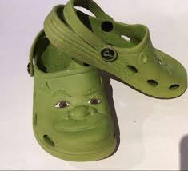
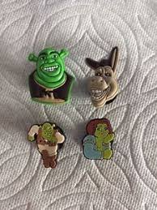

Crocs were fist made in 1999, but they wern't sold in america till 2002. It was founded by shoe manufacturer Scott Seamans, Lyndon "Duke" Hanson, and George Boedecker. The design is known world wide and everyone has heard of crocs. The shoe's first model was unvieled in 2002 at Fort Lauderdale boat show in florida, and sold out the 200 pairs produced at that time. It has since sold 300 million pairs of shoes.

Jibbitz are basically small accessories that go in the holes of crocs to make it look cooler.

© 2017 Grant Harvey. All Rights Reserved.